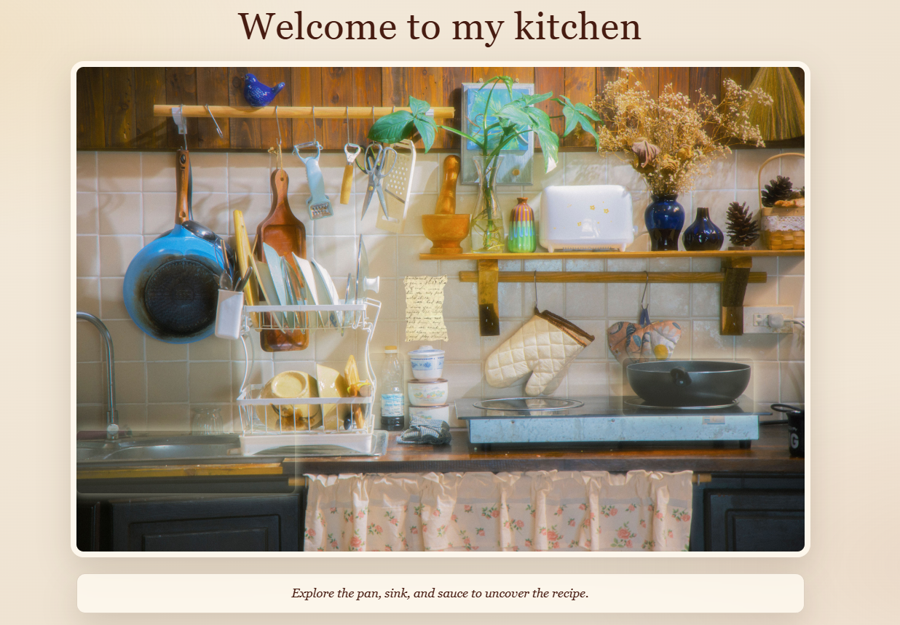
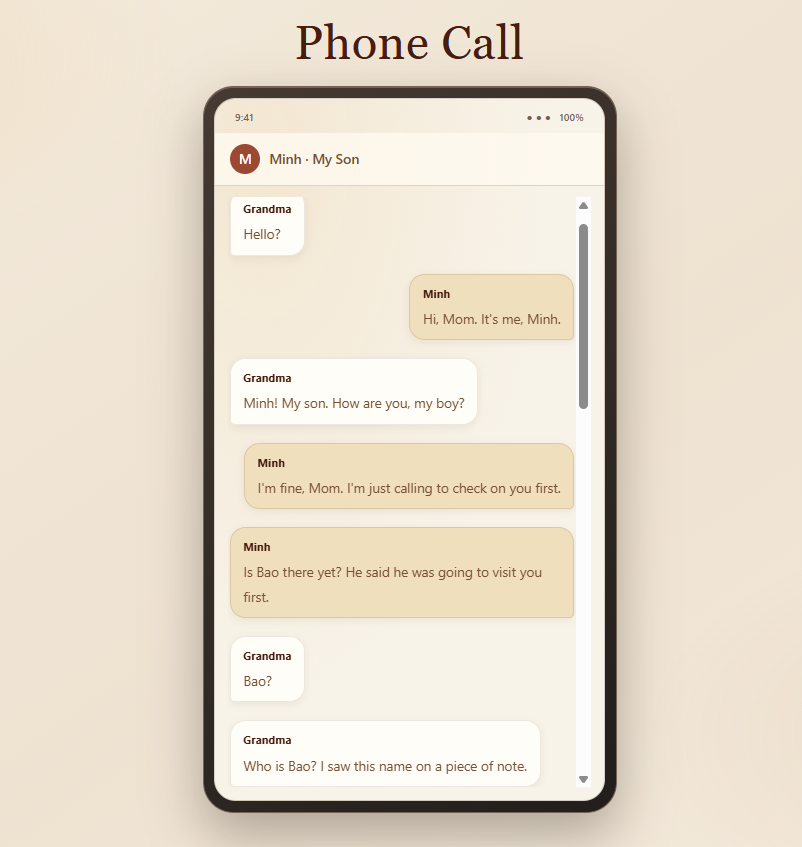

Featured Project
A Story Worth Remembering
Explore my interactive digital storytelling project.

The Dining Room
Family gathers around the table, sharing food, stories, and memories.

The Kitchen
Familiar recipes and everyday routines connect Grandma with her family.

The Phone Call
A conversation reveals the challenges of staying connected as memories fade.
Remembering Grandma
This interactive story explores the relationship between a grandmother and her grandchildren, focusing on memory, family, and the emotions that remain even when memories begin to fade. Through familiar places and everyday moments, the project reflects on the importance of family connections and the memories we share.
Explore Net Art →